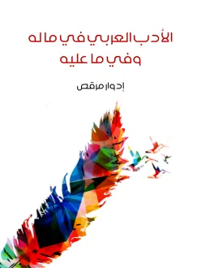

الأدب العربي في ما له وفي ما عليه

قراءة عربية أصلية محددة النطاق في الصفحات 9، 10 من ملف PDF المرتبط، وليست تلخيصا كاملا للكتاب. نناقش ما تدعمه هذه المقاطع فقط.
الأدب رابطة اجتماعية ومعيار بيان
تحدد التوطئة أن الرسالة نظرات موجزة لا تاريخ مفصل، ثم تعرف الأدب الذي تقصده بالشعر والنثر وتدافع عن قدرته على وصل المختلفين. تقارن حاجات العلماء إلى البيان بثبات ما تراه من أركان الفن عبر الزمن. يجتمع في الغرض التثقيفي اعتزاز بالأدب ومحاولة حساب ما له وما عليه.
زاوية وحدود القراءة
هذه قراءة في أول التوطئة، لا إقرار بتفوق الأدب على العلوم أو ثبات أحكام الجمال جميعا. أحكام المفاضلة جزء من خطاب المؤلف وتحتاج إلى أمثلة. يمكن التمييز بين أن تحسن العبارة نقل المعرفة وبين أن تصبح زينتها بديلا عن صحة المعلومة أو وضوح البرهان.
الطبعة والقراءة
نسخة إلكترونية مجانية من مؤسسة هنداوي عبر صفحات. رابط PDF من خادم الناشر يرسل الملف للتنزيل، ولا نستضيف الكتاب. هذه النسخة من الكتاب صادرة ومتاحة مجانًا من مؤسسة هنداوي بشكل قانوني؛ حيث إن نص الكتاب يقع في نطاق الملكية العامة تبعًا لقوانين الملكية الفكرية.
تنزيل PDF المجاني ↓ القراءة والمصدر الرسمي ↗